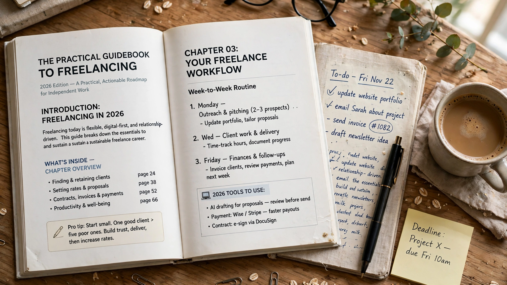

How freelancers get clients, follow up — and actually get paid on time
Most freelance income is not lost in the work. It is lost in the gaps: the lead never followed up, the invoice never sent, the contract sitting unsigned. Watch the short video, then work the simple system below.
Text me one get-paid step a week
The get-paid system, in five moves
FreelancerOS is one dashboard for the business side of freelancing: a client tracker with follow-up reminders, a branded invoice generator with PDF export, a four-stage content pipeline, and a template pack with a contract, a proposal and a client onboarding form. Whether you use it or a notebook, these five moves are the system:
- Track every client in one place: who they are, what stage the work is at, and what you owe them next — never scattered across inboxes and sticky notes.
- Follow up on a reminder, not a memory: most lost gigs are simply enquiries nobody answered twice. A reminder that fires is worth more than good intentions.
- Invoice the day the work lands: a branded invoice with a PDF, sent while the work is fresh, is the simplest on-time-payment habit there is.
- Get the agreement signed before you start: a contract and proposal ready to send — and sign — keeps scope, price and dates clear for both sides.
- Keep new work coming in: a quiet pipeline this month is a quiet bank account next month. Keep one channel for new gigs always open.
That last move is the one freelancers drop first when they get busy. A curated job board built for flexible and remote work keeps it open with almost no effort:
Affiliate disclosure: if you sign up through the link below, we may earn a commission at no extra cost to you.
Keep the pipeline warm: FlexJobs lists hand-screened remote and flexible jobs — a steady source of new enquiries to feed into your tracker while you deliver the work you already have.
Tools that match each move in the system
Affiliate disclosure: the cards below are affiliate offers. If you buy through them, MehyarSoft LLC may earn a commission at no extra cost to you. We place only offers that fit the step they appear under.
FlexJobs screens remote and flexible job listings so your pipeline does not depend on referrals alone — new enquiries, ready to drop into your client tracker.
Browse FlexJobs →
Brandify works on your SEO and AI visibility, so clients searching for what you do can actually find your site — inbound enquiries instead of only outbound chasing.
See Brandify →
Freelancing Hacks is a practical guide to the business of freelancing — positioning, clients and income — for the parts of the job your craft skills do not cover.
See Freelancing Hacks →
signNow sends documents for electronic signature, so the contract and proposal from your template pack come back signed in hours, not after a week of polite reminders.
See signNow →
Preply connects tutors with students online — if you have a language or a teachable skill, it is a second, schedulable income stream that fits around client work.
See Preply →Get one get-paid step by text, weekly
Leave your number and we'll text you one simple step a week, in system order — track, follow up, invoice, sign, refill the pipeline — plus offers matched to the steps above. Start by opening the free FreelancerOS demo with sample data and clicking through the tracker, invoice generator and templates yourself.
Keep going
Affiliate disclosure: links below are affiliate links; we may earn a commission at no extra cost to you.
Work the system in order: find the next gig, get found by clients, sharpen the business side, get it signed fast, add a teaching stream.
Freelancers who sell their know-how as prompts and templates have a sister guide too: PromptPack Pro — prompt wins for small businesses.